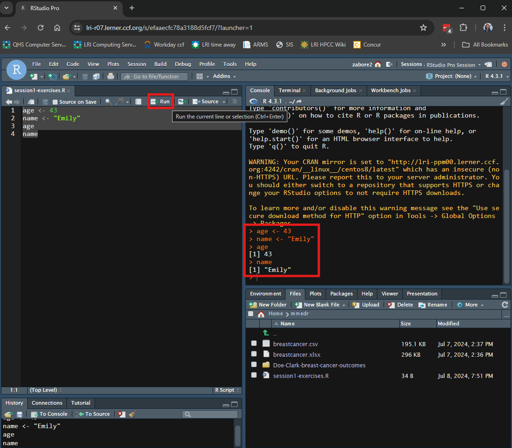
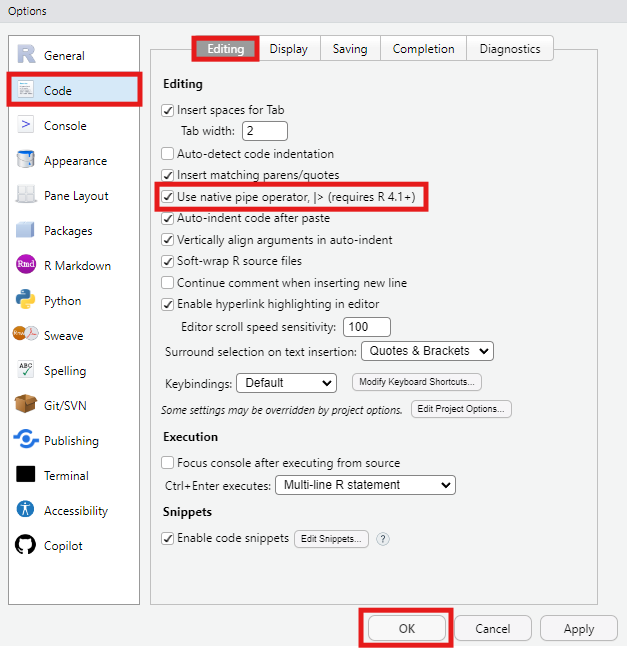

x <- 55
x[1] 55In this session, we will learn the basics of programming in R. This will lay the foundation for more advanced topics to come.
Use the assignment operator <- to assign values to objects
<- assigns the value on the right, to the object on the leftTo assign a character variable, wrap it in single or double quotes:
To send this to the console to be executed, you can do one of the following:

Functions are pre-packaged scripts that automate more complicated procedures. They are executed by typing the name of the function followed by round brackets. Inside the round brackets we can provide one or more parameters, or arguments:
Use c() to create a vector of values or seq() to create a sequence of values:
Note: when we supply the arguments to a function in the order in which they are listed in the documentation, we do not need to name them. If we name them, we can supply them in any order. The above three assignments to b yield the same results.
Here are all of the possible arguments to the seq() function:
So the following produce the same results:
Get help by typing ?fnname where fnname is the name of the function of interest.
?mean in the console??fnname can be used if you aren’t sure of the exact function name - it will return any keyword matchesIn the help file, it can be particularly useful to scroll to the bottom and read and try the exercises.
You can write comments in your R code by starting a line with “#”. It is recommended to write a lot of verbal comments about what your R code is doing so that if you need to come back to it later, you will know what it was doing and why.
For example:
Before we go on, we need to learn about the pipe operator.
We will use the pipe operator to string multiple functions together seamlessly.
There are two forms of the pipe operator in R:
They perform (almost) identically, but one is built in to base R and the other requires you to load a package.
Go to Tools > Global Options > Code > Editing and tick the box for “Use native pipe operator” to enable this in RStudio.

You can insert the pipe operator through the keyboard shortcut ctrl + shift + m.
For example, if we want generate 100 random numbers from the exponential distribution, take the log transformation, and then get the mean, we could nest the functions as follows:
[1] -0.4802932Or we can connect them with the pipe operator:
set.seed(123) # needed to make random number generation reproducible
100 |>
rexp() |>
log() |>
mean()[1] -0.4802932The left hand side is passed as the first argument of the function on the right hand side. This creates code that is very readable and concise, expecially if you arrange your code vertically rather than horizontally, and it is also easy to comment out various parts if needed.
# Horizontal pipes
set.seed(123) # needed to make random number generation reproducible
100 |> rexp() |> log() |> mean()[1] -0.4802932e.g. What if I change my mind and don’t want the log transformation anymore?
In the vertical setup this is easy:
# Vertical pipes
set.seed(123) # needed to make random number generation reproducible
100 |>
rexp() |>
# log() |>
mean()[1] 1.045719The keyboard shortcut ctrl + shift + c will insert a # (comment) at the beginning of the code line.
We’ll be using the pipe operator throughout the remaining R sessions in this course.
The == operator tests equality between two values:
The first returns TRUE because 5 does in fact equal 5.
The second returns FALSE because 5 is not equal to 9.
This will be useful later when we subset data.
R has three main indexing operators:
$[[ ]][ ]To access specific variables, use the $ operator in the form dataframe$varname, where dataframe is the name of the object to which we assigned our data set, and varname is the name of the variable of interest.
To use best practices from last class, create an R project for use in this course. Create it in the existing “mmedr” folder on your home directory.
Load the “breastcancer” data that we saved as a .csv to the “mmedr” folder on our home drive last class, and assign it to the object “df”.
Clean the names using the {janitor} package.
For example, to calculate the mean of the variable age_at_diagnosis_years in the dataframe df:
Alternatively, use double brackets in the form dataframe[["varname"]]
Use the table() function to create a table of the values in “grade” in the breastcancer data.
Sometimes we may want to create a subset of our data, or access a value based on more than one dimension.
Datasets typically have two dimensions: columns and rows
For dataframe df, let i index the row and j index the column.
Then we can access any single cell in the dataframe using the syntax:
We can use this concept to create subsets of our data as well.
We can create a subset of our data based on the values in a row, for example limiting to patients who were treated with radiation therapy (i.e. rt = 1):
We see that the new data subset has 1772 rows instead of the 3000 in the original dataset.
And now there are only values of 1 for the variable “rt”:
The & operator signifies “and”.
So for example we could subset based on patients who were treated with radiation therapy AND had grade 3 disease:
And we see that the new data subset has 851 rows instead of the 3000 in the original dataset.
The | operator signifies “or”.
So for example we could subset based on patients who were treated with radiation therapy OR had grade 3 disease:
And we see that our new data subset has 2249 rows instead of the 3000 in the original dataset.
We can also create a subset of our data based on columns, for example limiting to radiation therapy:
Or we can simultaneously subset based on rows and columns, for example limiting to the radiation column among patients with grade 3 disease:
We can also subset directly within functions. Suppose we want to calculate the mean of the variable age_at_diagnosis_years in the dataframe df, but only among those who were treated with radiation therapy:
This avoids creating additional datasets that may not be needed again.
Say we are only interested in the affect of radiation therapy in older adults. Create a subset of the breastcancer data in patients >=65 years old, and then look at a table of rt among the older subset.